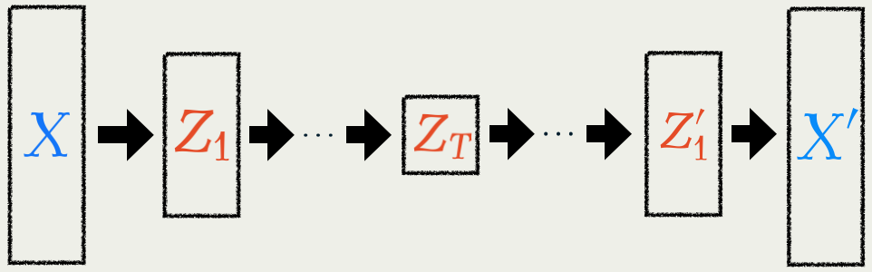

1 (Mathematical) Introduction
- Generative Modeling ≒ Bayesian Modeling
- There are two main approaches:
- Sampling-based Methods: Monte Carlo methods, etc.
- Optimization-based Methods: Diffusion Models, etc.
1.1 Problem: Bayesian / Generative Modeling

1.2 Two Popular Solutions
To get samples from the posterior: p(\textcolor{#E95420}{z}|\{x_i\}_{i=1}^n)\propto p(\textcolor{#E95420}{z})\prod_{i=1}^n p(x_i|\textcolor{#E95420}{z})=\text{prior}\times\prod_{i=1}^n\text{model likelihood of }x_i
| Sampling-based Methods | Optimization-based Methods | |
|---|---|---|
| Purpose | Get a sample | Get an approximation |
| Scalable? | No (Yet) | Yes |
| Unbiased? | Yes | No |
| E.g. | Monte Carlo | Diffusion Models |
| Mainly used | in Bayesian statistics | in Machine Learning |
This talk is about an optimization-based Methods
1.3 Markov Chain Monte Carlo

This is applicable to p(\textcolor{#E95420}{z}|\{x_i\}_{i=1}^n)\propto p(\textcolor{#E95420}{z})\prod_{i=1}^n p(x_i|\textcolor{#E95420}{z}) because …
\nabla\log p(\textcolor{#E95420}{z})\quad(\text{score function})
is the only quantity that matters.
1.4 Piecewise Deterministic Monte Carlo

- Better convergence (Diaconis, 2013), (Andrieu and Livingstone, 2021)
- Better scalability
(Bierkens et al., 2019) - Numerical stability
(Chevallier et al., 2025)
Available in our package PDMPFlux.jl

] add PDMPFlux1.5 Variational Inference
\text{Posterior distribution:}\qquad p(\textcolor{#E95420}{z}|\boldsymbol{x})\propto p(\textcolor{#E95420}{z})\prod_{i=1}^n p(x_i|\textcolor{#E95420}{z}) is searched in a variational formulation via KL divergence: p(\textcolor{#E95420}{z}|\boldsymbol{x})=\argmin_{q\in\mathcal{P}(\mathcal{Z})}\operatorname{KL}\bigg(q(\textcolor{#E95420}{z}),p(\textcolor{#E95420}{z}|\boldsymbol{x})\bigg).
1.6 Variational Auto-Encoder (VAE)
In generative modeling, we also have to learn p\in\{p_\theta\}_{\theta\in\R^e}

Jointly trained to minimize the KL divergence \operatorname{KL}\bigg(q_\phi(\textcolor{#E95420}{z}|\textcolor{#2780e3}{x}),p_\theta(\textcolor{#E95420}{z}|\textcolor{#2780e3}{x})\bigg).
1.6 Variational Auto-Encoder (VAE)
(Kingma and Welling, 2014) found that a part of the KL divergence \begin{align*} &\operatorname{KL}\bigg(q_\phi(\textcolor{#E95420}{z}|x),p_\theta(\textcolor{#E95420}{z}|x)\bigg)\\ &\qquad=\operatorname{E}_{\phi,x}[\log q_\phi(\textcolor{#E95420}{Z}|x)] -\operatorname{E}_{\phi,x}[\log p_\theta(\textcolor{#E95420}{Z},x)]+\log p_\theta(x)\\ &\qquad=\underbrace{\operatorname{KL}\bigg(q_\phi(\textcolor{#E95420}{z}|x),p_\theta(\textcolor{#E95420}{z})\bigg)-\operatorname{E}_{\phi,x}[\log p_\theta(x|\textcolor{#E95420}{Z})]}_{=:-\operatorname{ELBO}(\theta,\phi)\text{ : we only optimize this part}}+\log p_\theta(x) \end{align*} still lends itself to stochastic optimization.
Once learned, we are able to sample from p_{\theta^*}(\textcolor{#2780e3}{x})=\int_{\mathcal{Z}}p_{\theta^*}(\textcolor{#2780e3}{x}|\textcolor{#E95420}{z})p_{\theta^*}(\textcolor{#E95420}{z})\,d\textcolor{#E95420}{z}
Note that now q_\phi depends on x as well.
1.7 Denoising Diffusion Models (DDM)
Concentrating on learning p_\theta, we fix q_\phi(\textcolor{#E95420}{z}|\textcolor{#2780e3}{x})=q(\textcolor{#E95420}{z}|\textcolor{#2780e3}{x})=q^{t_1}(\textcolor{#E95420}{z_1}|\textcolor{#2780e3}{x})\prod_{i=1}^T q^{t_{i+1}-t_i}(\textcolor{#E95420}{z_{i+1}}|\textcolor{#E95420}{z_{i}}), as a path measure on \mathcal{Z}=(\R^d)^{T+1} of the Langevin diffusion.

A common choice is an OU process: q^t(z|x)=\operatorname{N}(z;x,t).
1.7 Denoising Diffusion Models (DDM)
As proposed in (Sohl-Dickstein et al., 2015), the KL will reduce to \begin{align*} \mathcal{L}(\theta)&=\operatorname{KL}\bigg(q(\textcolor{#E95420}{z}|\textcolor{#2780e3}{x}),p_\theta(\textcolor{#E95420}{z}|\textcolor{#2780e3}{x})\bigg)\\ &=\operatorname{E}[\log q(\textcolor{#E95420}{Z_{1:T}}|\textcolor{#2780e3}{x})]-\operatorname{E}[\log p_\theta(\textcolor{#2780e3}{x},\textcolor{#E95420}{Z_{1:T}})]+\log p_\theta(\textcolor{#2780e3}{x})\\ &=:-\operatorname{ELBO}(\theta)+\log p_\theta(\textcolor{#2780e3}{x}). \end{align*} By maximizing the \operatorname{ELBO}(\theta), we are still performing a form of (approximate) maximum likelihood inference since \operatorname{ELBO}(\theta)\le\log p_\theta(\textcolor{#2780e3}{x}).
1.7 Denoising Diffusion Models (DDM)